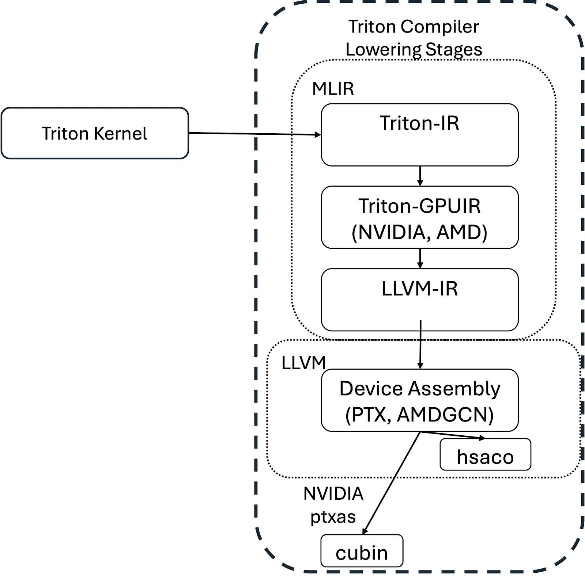
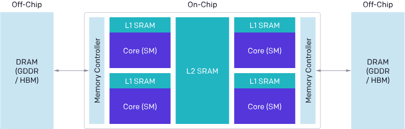
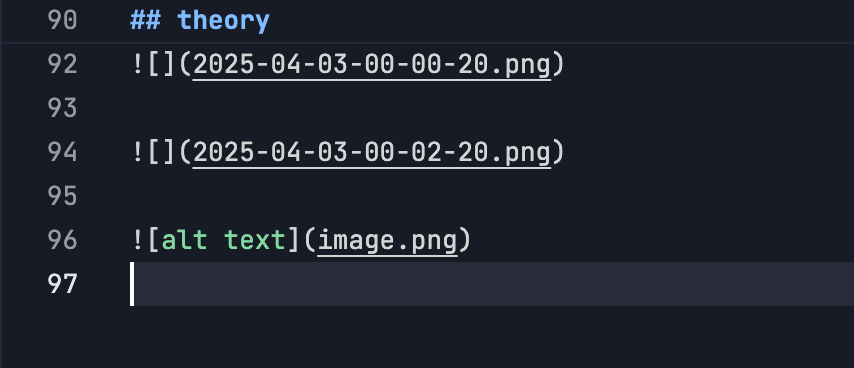

basic¶
https://triton-lang.org/main/python-api/triton.language.html
usage template¶
import torch
import triton
import triton.language as tl
@triton.jit
def kernel(
x_ptr, # *Pointer* to first input vector
y_ptr, # *Pointer* to second input vector
output_ptr, # *Pointer* to output vector
n_elements, # Size of the vector
BLOCK_SIZE: tl.constexpr, # Number of elements each program should process
):
# There are multiple 'program's processing different data. We identify which program
# we are here
pid = tl.program_id(axis=0) # We use a 1D launch grid so axis is 0
# This program will process inputs that are offset from the initial data.
# for instance, if you had a vector of length 256 and block_size of 64, the programs
# would each access the elements [0:64, 64:128, 128:192, 192:256].
# Note that offsets is a list of pointers
block_start = pid * BLOCK_SIZE
offsets = block_start + tl.arange(0, BLOCK_SIZE)
# Create a mask to guard memory operations against out-of-bounds accesses
mask = offsets < n_elements
# Load x and y from DRAM, masking out any extra elements in case the input is not a multiple of the block size
x = tl.load(x_ptr + offsets, mask=mask)
y = tl.load(y_ptr + offsets, mask=mask)
output = x + y
# Write x + y back to DRAM
tl.store(output_ptr + offsets, output, mask=mask)
grid = lambda META: (triton.cdiv(META['n_elements'], META['BLOCK_SIZE']),)
kernel[grid](x, y, output, n_elements, BLOCK_SIZE=1024)
advanced config¶
-
torch.library.triton_op： - 这是一个装饰器（decorator），用于包装可能调用一个或多个 Triton 内核的函数 - 它帮助将 Triton 内核集成到 PyTorch 的调度系统中 -
torch.library.wrap_triton： - 这是用来直接包装对 Triton 内核的调用 - 它处理 PyTorch 张量和 Triton 内核之间的数据转换
简单来说，这两个 API 的目的是让开发者能够方便地在 PyTorch 中使用 Triton 编写的高性能 GPU 内核。
举个例子：
import torch
import triton
import triton.language as tl
@triton.jit
def add_kernel(x_ptr, y_ptr, output_ptr, n_elements):
# Triton 内核的实现
pass
# 使用 triton_op 包装函数
@torch.library.triton_op
def my_add(x: torch.Tensor, y: torch.Tensor) -> torch.Tensor:
output = torch.empty_like(x)
# 使用 wrap_triton 包装对 Triton 内核的调用
torch.library.wrap_triton(add_kernel)(
x.data_ptr(),
y.data_ptr(),
output.data_ptr(),
x.numel()
)
return output
这样做的好处是： 1. 更好的性能优化 2. 更容易集成到 PyTorch 的生态系统中 3. 自动处理设备间的数据传输和类型转换
theory¶

 
def make_ttir(mod, metadata, opt):
pm = ir.pass_manager(mod.context)
pm.enable_debug()
passes.common.add_inliner(pm)
passes.ttir.add_rewrite_tensor_pointer(pm)
passes.ttir.add_combine(pm)
passes.common.add_canonicalizer(pm)
passes.ttir.add_reorder_broadcast(pm)
passes.common.add_cse(pm)
passes.common.add_licm(pm)
passes.common.add_symbol_dce(pm)
pm.run(mod)
乱谈Triton Ampere WMMA¶
Blocked Layout:
sizePerThread = [1, 8]：每个线程处理数据Size
threadsPerWarp = [8, 4]： warp内线程的布局
warpsPerCTA = [8, 1]：CTA（Block）内warp的布局
order = [1, 0]：按行访问
#blocked = #triton_gpu.blocked<{sizePerThread = [1, 8], threadsPerWarp = [8, 4], warpsPerCTA = [4, 1], order = [1, 0], CTAsPerCGA = [1, 1], CTASplitNum = [1, 1], CTAOrder = [0, 1]}>
#blocked1 = #triton_gpu.blocked<{sizePerThread = [1, 8], threadsPerWarp = [4, 8], warpsPerCTA = [4, 1], order = [1, 0], CTAsPerCGA = [1, 1], CTASplitNum = [1, 1], CTAOrder = [0, 1]}>
#mma = #triton_gpu.mma<{versionMajor = 2, versionMinor = 0, warpsPerCTA = [2, 2], CTAsPerCGA = [1, 1], CTASplitNum = [1, 1], CTAOrder = [1, 0], instrShape = [16, 8]}>
#shared = #triton_gpu.shared<{vec = 8, perPhase = 2, maxPhase = 4, order = [1, 0], CTAsPerCGA = [1, 1], CTASplitNum = [1, 1], CTAOrder = [0, 1], hasLeadingOffset = false}>
#shared1 = #triton_gpu.shared<{vec = 8, perPhase = 1, maxPhase = 8, order = [1, 0], CTAsPerCGA = [1, 1], CTASplitNum = [1, 1], CTAOrder = [0, 1], hasLeadingOffset = false}>
module {
func public @matmul_kernel_0d1d2d3d4c5d6c7d8c(
%arg0: !tt.ptr<f16> {tt.divisibility = 16 : i32}, ...
%c32_i32 = arith.constant 32 : i32
%cst = arith.constant dense<32> : tensor<32x32xi32>
%c32 = arith.constant 32 : index
%c1024 = arith.constant 1024 : index
%c0 = arith.constant 0 : index
%cst_0 = arith.constant dense<0.000000e+00> : tensor<32x32xf32>
%0 = tt.make_range {end = 32 : i32, start = 0 : i32} : tensor<32xi32>
%1 = tt.expand_dims %0 {axis = 1 : i32} : (tensor<32xi32>) -> tensor<32x1xi32>
%2 = tt.splat %arg3 : (i32) -> tensor<32x1xi32>
%3 = arith.muli %1, %2 : tensor<32x1xi32>
...
%11 = arith.muli %1, %10 : tensor<32x1xi32>
%12 = tt.splat %arg1 : (!tt.ptr<f16>) -> tensor<32x1x!tt.ptr<f16>>
%13 = tt.addptr %12, %11 : tensor<32x1x!tt.ptr<f16>>, tensor<32x1xi32>
%14 = tt.broadcast %13 : (tensor<32x1x!tt.ptr<f16>>) -> tensor<32x32x!tt.ptr<f16>>
%15 = tt.addptr %14, %8 : tensor<32x32x!tt.ptr<f16>>, tensor<32x32xi32>
%16:3 = scf.for %arg6 = %c0 to %c1024 step %c32 iter_args(%arg7 = %cst_0, %arg8 = %9, %arg9 = %15) -> (...)
%24 = tt.load %arg8 {cache = 1 : i32, evict = 1 : i32, isVolatile = false} : tensor<32x32xf16>
; cp.async.cg.shared.global [ %r44 + 0 ], [ %rd11 + 0 ], 0x10, %r45;
; cp.async.cg.shared.global [ %r46 + 0 ], [ %rd12 + 0 ], 0x10, %r45;
%25 = tt.load %arg9 {cache = 1 : i32, evict = 1 : i32, isVolatile = false} : tensor<32x32xf16>
; cp.async.cg.shared.global [ %r48 + 0 ], [ %rd13 + 0 ], 0x10, %r45;
; cp.async.cg.shared.global [ %r50 + 0 ], [ %rd14 + 0 ], 0x10, %r45;
%26 = tt.dot %24, %25, %arg7 {allowTF32 = true} : tensor<32x32xf16> * tensor<32x32xf16> -> tensor<32x32xf32>
; ldmatrix.sync.aligned.m8n8.x4.shared.b16 { %r236, %r237, %r238, %r239 }, [ %r56 + 0 ];
; …
; ldmatrix.sync.aligned.m8n8.x4.trans.shared.b16 { %r232, %r233, %r234, %r235 }, [ %r61 + 0 ];
; …
; ldmatrix.sync.aligned.m8n8.x4.shared.b16 { %r138, %r139, %r140, %r141 }, [ %r120 + 0 ];
; …
; ldmatrix.sync.aligned.m8n8.x4.trans.shared.b16 { %r121, %r122, %r123, %r124 }, [ %r125 + 0 ];
; mma.sync.aligned.m16n8k16.row.col.f32.f16.f16.f32 { %f65, %f66, %f67, %f68 },
; { %r236, %r237, %r238, %r239 }, { %r232, %r233 }, { %f65, %f66, %f67, %f68 };
; mma.sync.aligned.m16n8k16.row.col.f32.f16.f16.f32 { %f69, %f70, %f71, %f72 },
; { %r236, %r237, %r238, %r239 }, { %r234, %r235 }, { %f69, %f70, %f71, %f72 };
; mma.sync.aligned.m16n8k16.row.col.f32.f16.f16.f32 { %f65, %f66, %f67, %f68 },
; { %r138, %r139, %r140, %r141 }, { %r121, %r122 }, { %f65, %f66, %f67, %f68 };
; mma.sync.aligned.m16n8k16.row.col.f32.f16.f16.f32 { %f69, %f70, %f71, %f72 },
; { %r138, %r139, %r140, %r141 }, { %r123, %r124 }, { %f69, %f70, %f71, %f72 };
%27 = tt.addptr %arg8, %cst : tensor<32x32x!tt.ptr<f16>>, tensor<32x32xi32>
%28 = arith.muli %arg4, %c32_i32 : i32
%29 = tt.splat %28 : (i32) -> tensor<32x32xi32>
%30 = tt.addptr %arg9, %29 : tensor<32x32x!tt.ptr<f16>>, tensor<32x32xi32>
scf.yield %26, %27, %30 : tensor<32x32xf32>, tensor<32x32x!tt.ptr<f16>>, tensor<32x32x!tt.ptr<f16>>
}
%17 = tt.splat %arg5 : (i32) -> tensor<32x1xi32>
%18 = arith.muli %1, %17 : tensor<32x1xi32>
%19 = tt.splat %arg2 : (!tt.ptr<f16>) -> tensor<32x1x!tt.ptr<f16>>
%20 = tt.addptr %19, %18 : tensor<32x1x!tt.ptr<f16>>, tensor<32x1xi32>
%21 = tt.broadcast %20 : (tensor<32x1x!tt.ptr<f16>>) -> tensor<32x32x!tt.ptr<f16>>
%22 = tt.addptr %21, %8 : tensor<32x32x!tt.ptr<f16>>, tensor<32x32xi32>
%23 = arith.truncf %16#0 : tensor<32x32xf32> to tensor<32x32xf16>
tt.store %22, %23 {cache = 1 : i32, evict = 1 : i32} : tensor<32x32xf16>
; st.global.v4.b32 [ %rd32 + 0 ], { %r158, %r159, %r160, %r161 };
return
}
}